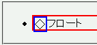
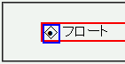

リストマーカーをボックスの外に置いた（list-style-position:outside;）リストアイテム要素で、内容物の先頭の要素を左フロートにするとリストマーカーがリストアイテム要素のボーダー領域やその内側に入り込む。
<ul> <li style="border:2px solid red;"> <div style="float:left; width:1em; border:2px solid blue;">◇</div>フロート </li> </ul>
WinIEでは、outside型のリストマーカーはli要素のボーダー領域より外側に置かれるはずです。
Netscape7.1標準モード
WinIE6.0標準モード
WinIE6.0の標準モードと互換モードで不具合の発生を確認しました。